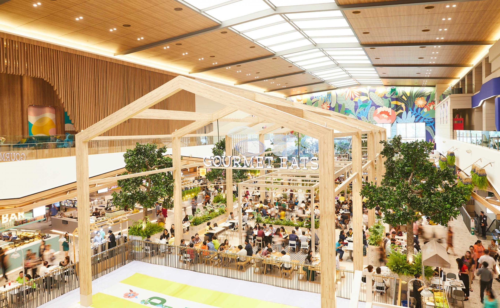
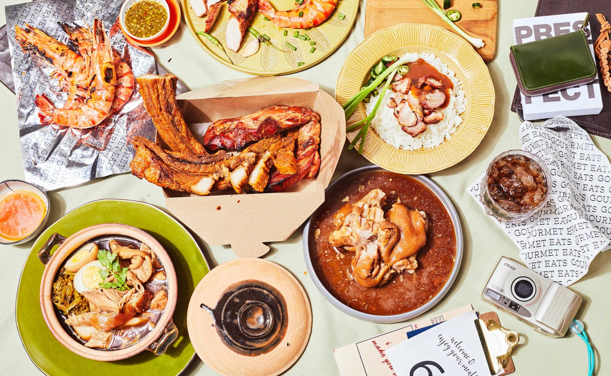

Gourmet Eats F&B
Brand identity for Thailand food hall chain.
Food Photography: @superverysnapshot
Insights
Eating is not only about the food. It is a ceremony. It is a gathering. It is about whom you eat with. It is a conversation.
Gourmet food is not restricted to prestine looking food. Especially in this food hall, gourmet food encompasses street food.
Response
We envision Gourmet Eats to be a place of gathering. After all, a meal is best if shared. We develop a typeface that reflects the echos of conversations — electic and lively, that occur in the food hall. The typeface is the voice of the food hall.


Photography Direction
Gourmet Eats imageries depict real people and real food. They feel imperfect and personal. The imageries are like snapshots, straight from a family album or smart phone. They embody the pure relationship between people and food as well as people and people. It is what it is: sometimes messy and ugly.